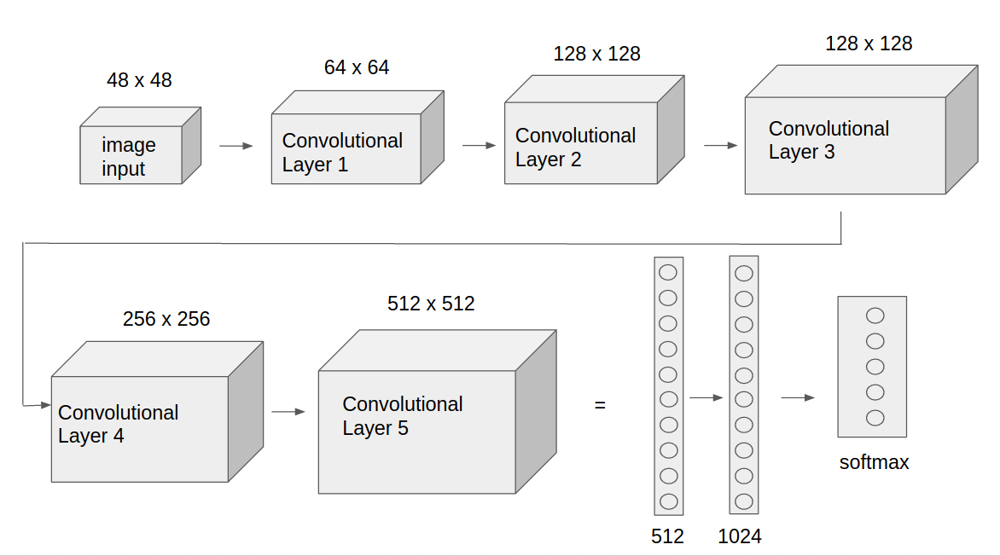

Born and raised in Gainesville, FL, I earned a bachelor's degree in Mechanical Engineering at Virginia Tech,
and am currently working on my master's in Robotics at Northeastern University in Boston, MA.
My primary areas of interest in robotics are sensing and navigation, and I have experience using ROS and
Kalman filtering to perform mobile robot localization. I'm also skilled in system integration, and have
specialized as a Systems Integration Engineer at L3Harris for a couple of years. I am working on expanding
my focus areas from pure mechanical and electrical to include more software and theory proficiencies.
My non-technical hobbies include playing basketball, ukulele, and Virtual Reality games. I'm an avid reader
and listener of audiobooks of topics ranging from science/technology, self-improvement, neuroscience, and
science-fiction. Lastly, I'm passionate about helping people to learn and to enjoy learning and am actively
searching for novel platforms to make education more accessible and enjoyable.
Projects
September 2019 ~ Now
VI-SLAM on NUance Car
ROS | CV | Python | MATLAB
Integrate the ORB-SLAM3 algorithm with ROS for localization and
mapping on the NUance autonomous car.
Virtual Reality Game
C++ | Unreal Engine 4 | Blender
Developed a Virtual Reality Escape Room using the Oculus Rift CV1
Stretch RE1 Autonomous Navigation
ROS | Python | Path Planning | Mapping
Using the Hello Robot Stretch RE1 robot to transport
a multimodal sensor suite to perceive human state and wellbeing from a remote location.
Machine Learning project in which credit card fraud detection was performed using Support Vector Machines and Logistic Regression models.
Data preprocessing and resampling was used to compensate for heavy class imbalance.
Electronic Limited-Slip Differential
C++ | Arduino | CAD | Sensor Fusion
Baja SAE Skunkworks team designed and tested an electronically controlled limited-slip differential for the off-road Baja vehicle. I designed the control system, performed sensor selection and integration, and led vehicle simulation
Computer Vision Eye Tracking
CV | RaspberryPi | Arduino | Python
Extended the Servo Smoothing experimental robot designed by James Bruton by integrating webcam and RaspberryPi with OpenCV for face tracking to control the eyes to follow movement
This project aims to use deep learning and manipulation platform to train a two-armed robot to play the piano based on the human emotion.
Motivation
We live in an era in which communication seems simpler than any times, a friend is only one text away or one video chat away. Although communication may be easier and faster, people still feel lonely and depression rates have largely increased. Inspired by this circumstance, this project is to design a system that would enable the Baxter Robot to detect the negative emotion of its master and play songs on the piano using both hands to help him/her get rid of the bad feelings.
Emotion Detection
1. Data Description
The data consists of 48x48 pixel grayscale images of faces. The faces have been automatically registered so that the face is more or less centered and occupies about the same amount of space in each image. The datasets are composed of 28,709 training examples
and 3,589 testing examples. The training samples are then divided into two sets namely; Training Set and Validation Set. Training set samples composed of 80% of the original dataset samples and 20% of the samples are specified for validation.
2. Data Augmentationg
In order to avoid overfitting and improve
recognition accuracy, the following transforms are perfomed on each image:
a. Rescale (1. / 255)
B. Rotation (30)
b. Shear (0.3)
c. Zoom (0.3)
d. shift(width:0.4,height:0.4)
e. Flip (horizontal)
3. Proposed CNN Model
The CNN Model I built takes a 48*48 pixels grayscale image as input. This model is composed of 5 convolutional layers, each followed with a max pooling layer, and 2 fully connected layers. I
classified images through softmax activation function at the last layer (output layer). The
output layer consists of 5 neurons corresponding to 5
emotional labels: Angry, Happy, Neutral, Sad and Surprise.

Emotion Detection Demo
Piano Playing
The detected emotion would be written in a text file using basic pyhton I/O function. The piano playing node keep reading this text file and when the emotion "sad" is detected and written in the file, baxter would start playing the piano
Locate keys using AprilTags
Use pose infomation of the two apriltags in left_arm frame to compute the poses of keys in the baxter base frame
The goal of this project is to enable Baxter Robot pick up a nerf gun, locate a cup, pull the nerf gun trigger to shoot the cup when given a user input, and move to a final pose.
Action Sequence
1. Baxter goes through initial calibration and start up sequence. Arms are moved to an initial pose.
2. Baxter finds the nerf gun using an AprilTag and its left arm camera
3. Baxter moves its left arm to line up with the nerf gun and closes its gripper to pick up the gun
4. Once Baxter has the gun, it uses its left arm camera to find a cup using darknet
5. Baxter keeps moving its left arm until the cup is in the center of the image produced by the camera
6. Baxter moves its right arm to put its grippers around the nerf gun trigger
7. Baxter waits for a user input to confirm the firing of the gun
8. Baxter keeps waiting until the user tells it to fire
9. Baxter pulls the trigger using its right gripper
10. Baxter moves to a final pose right after shooting
The goal of this project is to drive the KUKA youBot to pick up a block at the start location, carry it to the desired location, and put it down in the simulation software V-REP. The project covers the following topics: 1. Plan a trajectory for the end-effector of the youBot mobile manipulator. 2. Generate the kinematics model of the youBot, consisting of the mobile base with 4 mecanum wheels and the robot arm with 5 joints 3. Apply feedback control to drive the robot to implement the desired task 4. Conduct the simulations in V-REP
Most grasping algorithms today often fail to handle scenarios where objects are tightly packed together. They can attempt bad grasps repeatedly to no avail since they can only find accessible grasps. This project proposed to discover and learn synergies between pushing and grasping from experience through model-free deep reinforcement learning.
System Overview
Model Input & Output
The Q-function is modeled as two feed-forward fully convolutional networks(FCNs) Φp and Φg. FCN Φp is for pushing motion primitive behavior and FCN Φg is for grasping.
For each individual FCN Φψ:
Input: the heightmap image representation of the current state
Output: a dense pixel-wisemap of Q values with the same image size and resolution as that of the state
Note: each individual Q value prediction at a pixel p represents the future expected reward of executing primitive ψ at 3D location q where q→p ∈st.
The goal of this project is to Create an image panorama by stitching a set of images together
Image Registration
I used SURF to do the feature point extraction and matching, then used random sample consensus(RANSAC) for transform matrix estimation
Image Warping
Use the derived transform matrix nad project that warped image on a plain surface
Image Blending
Using Center-Weighting algorithm (compute the the distance from each pixel to 4 boundaries of the image and take the the smallest ratio
between two distances and the dimension of image as the corresponding pixel
value on mask matrix). The mask we derived is shown in the following image:
For each image, I derive a mask and then warp the mask just as warp the image
Cropping
After doing image stitching and image blending, I get the panorama look as following
Use pythong to find the largest rectangle that don’t include the black region in the
panorama image, I get the final panorama look as following
This project is a dynamics simulation of a triangle bouncing in the enclosed rectangle. This project shows techniques expansion from theory and ability of building physical model.
dynamic model
The pictured pin-triangle is a constrained system involving 2 bodies: a equilateral triangle and a square. the triangle has length d = 3, mass m =0.5 and rotational inertia J=1 (assuming that the center of mass is at the center of geometry). The square has length D = 20, mass M = 5 and rotational inertia J=3 (assuming that the center of mass is at the center of geometry). The triangle has configuration (x,y,\theta_t) and the square has an angle \theta_s relative to the world frame. The triangle is constrainted to not bounce out of the square.